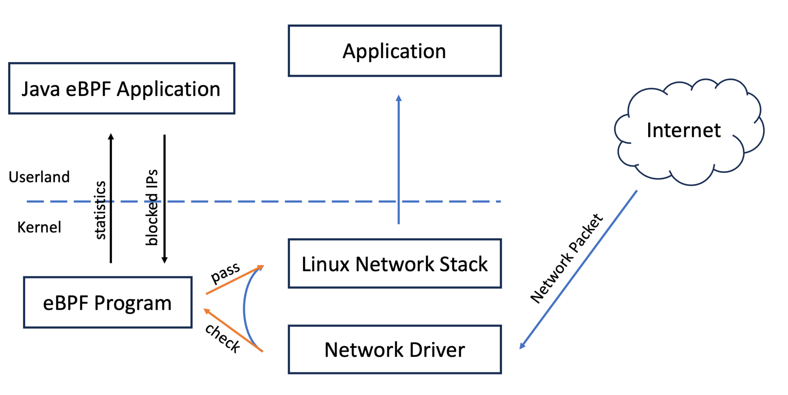

XDP — Express Data Path¶
Blog series: Part 9 — XDP-based packet filter · Part 13 — Packet logger with TC and XDP · Part 14 — Firewall with Java & eBPF
Talk: Building a Lightning Fast Firewall with Java & eBPF (JavaZone 2024)
Javadoc: XDPHook
Source: XDPHook.java
See also: TC Hook · BPF Maps · Global Variables

XDP (eXpress Data Path) is the fastest hook point in the Linux network stack. BPF programs run directly in the network driver, before any SKB allocation, achieving multi-million-packets-per-second rates on commodity hardware.
When to use XDP¶
- Line-rate packet filtering (DDoS mitigation, firewalls)
- Load balancing with direct server return
- Packet sampling and monitoring
- Dropping unwanted traffic before it reaches the kernel network stack
Implementing XDPHook¶
import me.bechberger.ebpf.annotations.bpf.BPF;
import me.bechberger.ebpf.annotations.bpf.BPFFunction;
import me.bechberger.ebpf.bpf.BPFProgram;
import me.bechberger.ebpf.bpf.XDPContext;
import me.bechberger.ebpf.bpf.XDPHook;
import me.bechberger.ebpf.runtime.XdpDefinitions.xdp_action;
@BPF(license = "GPL")
public abstract class MyXDPProg extends BPFProgram implements XDPHook {
@Override
@BPFFunction
public xdp_action xdpHandlePacket(XDPContext ctx) {
return xdp_action.XDP_PASS;
}
}
XDPHook requires you to implement xdpHandlePacket. The compiler plugin generates the
SEC("xdp") section automatically.
The XDPContext and xdp_md context¶
The preferred API is XDPContext, which wraps xdp_md with ergonomic helpers:
| Method | Description |
|---|---|
ctx.length() |
Packet length in bytes |
ctx.boundsOk(offset, size) |
Verifier-safe bounds check |
ctx.byteAt(offset) |
Read one byte (unsigned) |
ctx.shortAtNetworkOrder(offset) |
Read a big-endian short |
For raw access via xdp_md, the underlying struct fields are:
| Field | Type | Description |
|---|---|---|
data |
int |
Pointer to start of packet data (as u32) |
data_end |
int |
Pointer to end of packet data (exclusive) |
data_meta |
int |
Pointer to metadata area (before data) |
ingress_ifindex |
int |
Interface index the packet arrived on |
rx_queue_index |
int |
RX queue index |
Access packet bytes via raw Ptr<xdp_md> (lower-level, but needed for header parsing):
@BPFFunction
public xdp_action xdpHandlePacket(Ptr<xdp_md> ctx) {
// Cast data offset to pointer
Ptr<ethhdr> eth = Ptr.cast(Ptr.of(ctx.val().data));
// Bounds check required by verifier
if ((long)(eth + 1) > ctx.val().data_end) {
return xdp_action.XDP_PASS;
}
if (eth.val().h_proto == bpf_htons(ETH_P_IP)) {
return handleIPv4(ctx, eth);
}
return xdp_action.XDP_PASS;
}
Return values¶
| Constant | Value | Meaning |
|---|---|---|
xdp_action.XDP_ABORTED |
0 | Drop with error (increments counter) |
xdp_action.XDP_DROP |
1 | Drop silently |
xdp_action.XDP_PASS |
2 | Pass to normal kernel network stack |
xdp_action.XDP_TX |
3 | Hairpin — transmit back out on the same interface |
xdp_action.XDP_REDIRECT |
4 | Redirect to another interface / CPU / socket |
Attaching the program¶
public static void main(String[] args) throws Exception {
try (MyXDPProg prog = BPFProgram.load(MyXDPProg.class)) {
// Attach to all non-loopback interfaces that are up
prog.xdpAttach();
// Or attach to a specific interface by ifindex (from `ip link`)
// prog.xdpAttach(ifindex);
System.out.println("Running. Ctrl-C to stop.");
Thread.currentThread().join();
}
// Program is detached automatically on close()
}
Byte-order helpers¶
Network headers are big-endian; x86 is little-endian. Use the kernel macros (available as static constants in the generated C):
// In @BPFFunction
short ethProto = bpf_ntohs(eth.val().h_proto);
int dstIp = bpf_ntohl(ip.val().daddr);
On the Java side use Short.reverseBytes() / Integer.reverseBytes() or ByteBuffer with
ByteOrder.BIG_ENDIAN.
Full example — block a specific source IP¶
This example uses Ptr<xdp_md> (rather than XDPContext) because it needs raw
pointer arithmetic to walk Ethernet and IP headers — the pattern that requires bounds
checks and Ptr.cast.
@BPF(license = "GPL")
public abstract class BlockIP extends BPFProgram implements XDPHook {
/** IP to block in network byte order, set from Java. */
final GlobalVariable<Integer> blockedIp = new GlobalVariable<>(0);
@Override
@BPFFunction
public xdp_action xdpHandlePacket(Ptr<xdp_md> ctx) {
Ptr<ethhdr> eth = Ptr.cast(Ptr.of(ctx.val().data));
if ((long)(eth + 1) > ctx.val().data_end) return xdp_action.XDP_PASS;
if (eth.val().h_proto != bpf_htons(ETH_P_IP)) return xdp_action.XDP_PASS;
Ptr<iphdr> ip = Ptr.cast(eth + 1);
if ((long)(ip + 1) > ctx.val().data_end) return xdp_action.XDP_PASS;
if (ip.val().saddr == blockedIp.get()) {
return xdp_action.XDP_DROP;
}
return xdp_action.XDP_PASS;
}
public static void main(String[] args) throws Exception {
try (BlockIP prog = BPFProgram.load(BlockIP.class)) {
// Block 192.168.1.100 — store in network byte order
prog.blockedIp.set(Integer.reverseBytes(0xC0A80164));
prog.xdpAttach();
System.out.println("Blocking 192.168.1.100");
Thread.currentThread().join();
}
}
}
Performance tips¶
- Prefer native XDP mode (load without the SKB fallback path) when the driver supports it — most modern NICs and virtio do.
- Process as much as possible inside the BPF program. Passing packets up to the kernel incurs SKB allocation overhead.
- Use
BPFPerCpuArrayfor counters to avoid inter-CPU synchronisation. - Return
xdp_action.XDP_DROPas early as possible after the bounds checks.
Benchmark data (JavaZone 2024): Using Cloudflare's published data, XDP reaches ~10 Mpps — roughly 10× faster than iptables in PREROUTING, and even faster with NIC offloading.
Talk: Building a Lightning Fast Firewall with Java & eBPF¶
Examples¶
XDPDropEveryThirdPacket.java— XDP_DROP based packet filterXDPPacketFilter.java— IP-based firewallPacketCountByLength.java— packet length histogramFirewall.java— stateful firewall with blocklist map